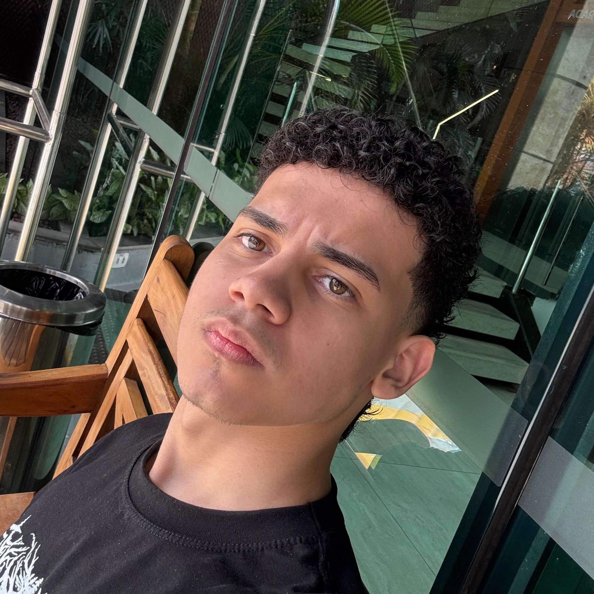
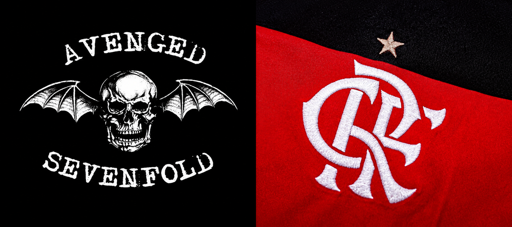

Olá, eu sou Murillo
Estudante de Ciência da Computação e desenvolvedor web. Meu objetivo é criar sites claros e rápidos que ajudam pequenos negócios a serem encontrados e a receberem clientes.

Minha história
Meu nome é Murillo e sou formado como Técnico em Energias Renováveis. Durante minha formação, participei de eventos científicos nos quais meus projetos foram avaliados por representantes de grandes organizações, como SENAI e Samarco, além de empresas e startups de destaque no Espírito Santo. Em 2024, fui selecionado para representar minha instituição no INOVAES com um projeto de placa solar capaz de acompanhar a posição do sol, desenvolvido com programação em Arduino e montagem elétrica. Em 2025, apresentei novamente no evento, meu TCC: um ponto de ônibus sustentável, alimentado por energia solar e eólica, com sistema de armazenamento de energia que permitia aos usuários carregar seus dispositivos eletrônicos. Apesar das oportunidades na área em que me formei, percebi que queria seguir um caminho que sempre esteve presente na minha vida: a tecnologia. Após concluir o curso técnico aos 18 anos, decidi iniciar minha graduação em Ciência da Computação. Cresci jogando videogames e tendo acesso à internet desde cedo, experiências que despertaram e fortaleceram, ao longo dos anos, meu interesse pela tecnologia e pelo desenvolvimento de software. Confira mais informações no meu currículo.


Habilidades
Técnicas
HTML, CSS, noções básicas de JavaScript, Git e GitHub.Pessoais
Comunicação interpessoal, proatividade e iniciativa, organização e planejamento, trabalho em equipe, atenção aos detalhes.Hobbies, músicas e jogos
Jogos, Esportes
Jogo jogos de campanha, jogos online, sou um torcedor fiel do Flamengo e um grande fã do Avenged Sevenfold.
Álbum favorito
Vida acadêmica
| Etapa | Onde | Quando |
|---|---|---|
| Fundamental 1 e 2 | Colégio Americano de Guarapari | 2009–2022 |
| Ensino médio técnico | Colégio CEEMTI Paulo Freire | 2023–2025 |
| Faculdade | Universidade de Vila Velha – Ciências da Computação | 2026–Graduando |
Principais matérias da faculdade
| Matéria | Resumo |
|---|---|
| Desenvolvimento Web | Criação de páginas com HTML e CSS. |
| Lógica de Programação | Algoritmos e resolução de problemas. |
| Banco de Dados | Modelagem e consultas SQL. |
Planos para o futuro
Quero atuar como desenvolvedor full stack, concluir a faculdade, fazer cursos de JavaScript e React e abrir meu estúdio de sites.